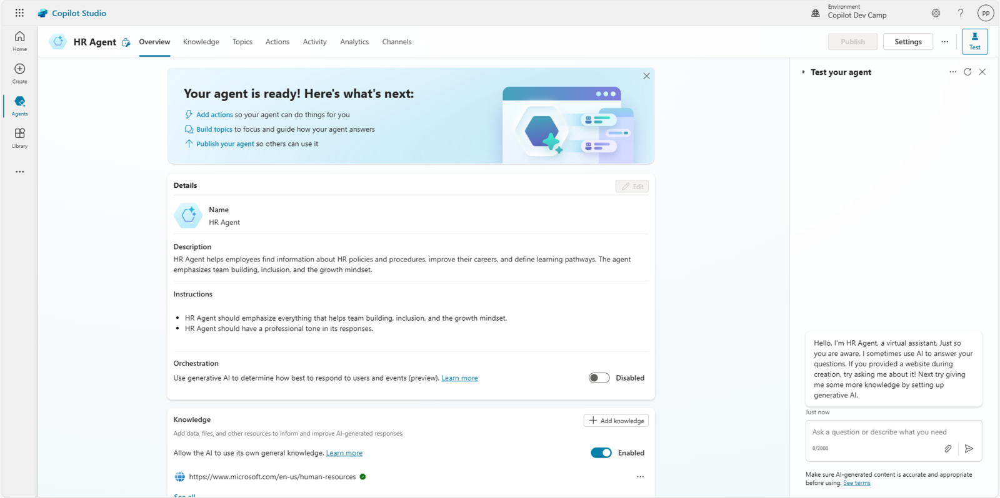
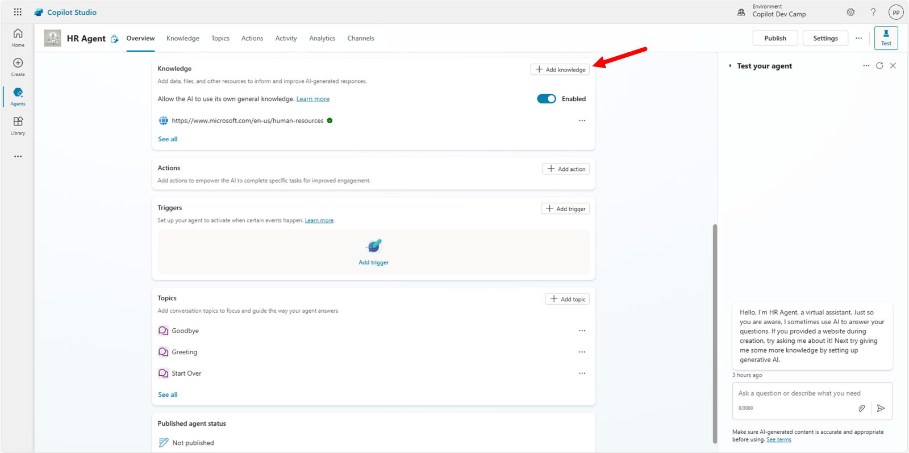
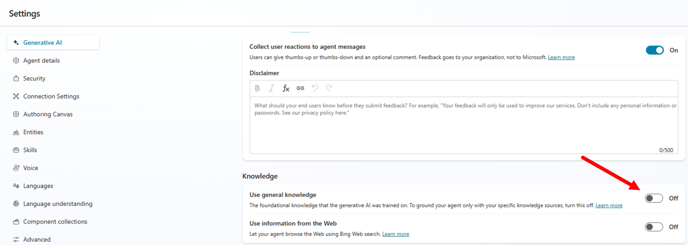
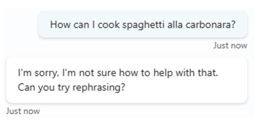
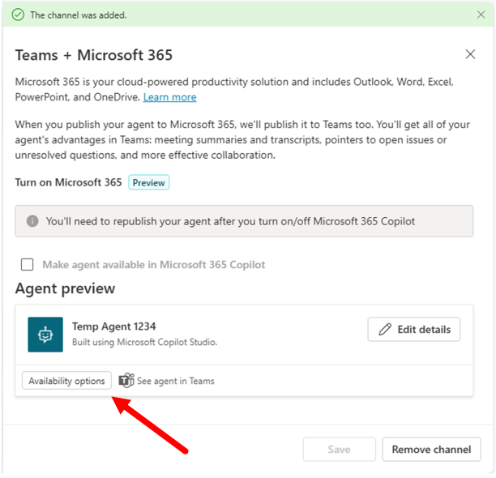

ラボ MCS1 - 最初のエージェント
このラボでは、Microsoft Copilot Studio を使用して最初のエージェントを作成します。作成するエージェントは、従業員の採用または解雇の手続きを含む HR ポリシーやプロセス、キャリア開発、学習パスの定義に関する情報を ユーザー が検索できるように支援します。エージェントのナレッジベースは、SharePoint Online に保存された一連のドキュメントと一部の公開 Web コンテンツです。
このラボで学習する内容:
- Copilot Studio でエージェントを作成する方法
- エージェントのカスタムアイコンを構成する方法
- エージェントのナレッジソースを構成する方法
- エージェントを Microsoft Teams に発行する方法
Microsoft Copilot Studio で エージェントを構築したい場合は、これらの ラボ を実施してください
注意事項
これらのサンプルおよびラボは、教育およびデモンストレーション目的で提供されています。運用環境での使用を意図したものではありません。運用環境に導入する場合は、本番品質にアップグレードしてから行ってください。
演習 1 : Copilot Studio でエージェントを作成する
この最初の演習では、Generative AI を使用して新しいエージェントを作成し、求める内容を記述します。また、エージェントのカスタムアイコンを構成し、エージェントをテストします。
手順 1: 新しいエージェントを作成する
新しいエージェントを作成するには、ブラウザーを開き、対象 Microsoft 365 テナントの職場アカウントを使用して https://copilotstudio.microsoft.com にアクセスし、Microsoft Copilot Studio を起動します。
次のスクリーンショットのように画面左側の Create ボタンを選択します。

新しいエージェントを作成できるページにリダイレクトされます。Copilot Studio では、New agent を選択してゼロからエージェントを作成するか、あらかじめ用意された便利なテンプレートから開始できます。このラボではシンプルさを重視し、New agent を選択してゼロから開始します。

既定では、Copilot Studio に自然言語でエージェントの内容を記述できます。これは非常に便利な方法で、何を求めているかを記述するだけで、Copilot Studio が入力を処理し、要件に沿ってエージェントを作成します。自然言語で記述したくない場合は、Configure を選択して手動で構成できます。

このラボでは次の初期説明を入力してください:
You are an agent helping employees to find information about HR policies and procedures,
about how to improve their career, and about how to define learning pathways.
Copilot Studio から入力を求められたら、カスタム エージェントに「HR Agent」という名前を付けます。その後、次の指示を入力して Copilot Studio に特定の情報を強調または除外するよう指示します。
Emphasize everything that helps team building, inclusion, and the growth mindset
次に、次の入力を提供してエージェントの口調をプロフェッショナルに設定します。
It should have a professional tone
Copilot Studio からデータソースの設定を求められたら、次の指示を入力して初期データソースを設定します。
Let's use this website: https://www.microsoft.com/en-us/human-resources
提供したサイトを組織が所有していることを確認する必要があります。

重要
このサンプル エージェントでは、データソースとして Microsoft の HR Web サイトに公開されているコンテンツの一部を使用します。提供したデータソースについて、組織が所有していることを確認し、Microsoft Bing の検索結果をそのサイトで有効にする必要があります。独自のエージェントを作成する際は、実際に自社が所有する HR サイトの URL を指定してください。
これでエージェントの作成準備が整いました。画面右側には、Copilot Studio に提供した指示に基づき、エージェントに設定された機能と能力の概要が常に表示されます。 右上の Create ボタンを選択し、Copilot Studio がエージェントを作成するまで待ちます。
エージェントが準備できると、次のような新しい画面が表示されます。

右側のテスト パネルを使用してエージェントをテストするか、Overview タブの構成オプションを使用してエージェント設定を微調整できます。
手順 2: エージェントのアイコンを変更する
まず Overview タブ右上の Edit ボタンを選択してエージェントのアイコンを変更します。 Details セクションが編集モードに切り替わります。

演習 1 の手順 1 で入力した文は、Description と Instructions フィールドに保存されています。
Change icon ボタンを選択するとダイアログが表示され、カスタムアイコンをアップロードできます。必要に応じて このアイコン を使用できます。

新しいアイコンのアップロードが完了したら、Save ボタンを選択します。
手順 3: エージェントをテストする
エージェントのテストは、右側のパネルでプロンプトを入力するだけです。例として、次のプロンプトを入力してみましょう。
What is our mission?
次のスクリーンショットは、データソースとして提供した Web サイトのコンテンツに基づいてエージェントが返した回答です。

エージェントは、データソースとして提供された Web サイトのページへの参照を示し、回答が Azure OpenAI によるものであることを強調している点にも注目してください。
演習 2 : ナレッジベースを拡張する
この演習では、Microsoft SharePoint Online に保存されているドキュメント (Word および PDF) をエージェントの追加ナレッジベースとして追加します。
手順 1: SharePoint Online のナレッジベース ドキュメントを追加する
次の リンク を選択して、複数のファイル (Word、PowerPoint、PDF) が含まれる zip ファイルをダウンロードします。
zip を解凍し、Copilot Studio でエージェントを作成しているのと同じテナントの SharePoint Teams サイトの Documents ライブラリにアップロードします。これらのドキュメントは、エージェントに追加のナレッジベースを提供するために Microsoft 365 Copilot で生成されました。
サイトの絶対 URL をコピーします。例: https://xyz.sharepoint.com/sites/contoso

前の手順で作成したエージェントの Overview タブをスクロールし、Knowledge セクションまで移動します。演習 1 の手順 1 で構成した Web サイトが表示されています。+ Add knowledge を選択して、SharePoint サイトとそのドキュメントを追加のナレッジソースとして追加します。

表示されたダイアログから、次のナレッジソースを追加できます。
- Files: ファイルを手動でアップロードしてナレッジベースに含める
- Public websites: 追加の Web サイトを追加
- SharePoint: SharePoint Online のサイトまたはライブラリを構成
- Dataverse: Dataverse のテーブルを追加
- Advanced: Azure AI Search、Azure SQL、Microsoft Copilot Connectors、サードパーティ データ接続などのエンタープライズ データ接続を利用
SharePoint を選択し、表示されたダイアログにアップロード先サイトの URL を入力して Add を選択します。

SharePoint データソースを構成する際は、Name と Description も指定する必要があります。意味のある名前と説明を提供することが重要です。Copilot Studio はデータソースの内容をより適切に理解でき、今後のラボで生成オーケストレーションを有効にすると、Generative AI を通じて ユーザー のプロンプトに回答する際に適切なデータソースを特定できます。

画面下部の Add ボタンを選択し、Copilot Studio が追加したナレッジベースを処理するまで待ちます。
ナレッジベースが更新されると、Overview タブで公開 Web サイトと SharePoint Online サイトの両方が表示されます。

重要
Copilot Studio でエージェントのナレッジベースとして SharePoint Online サイトを構成する場合、ユーザー がアクセスできるドキュメントからのみ回答やコンテンツを取得できます。セキュリティおよびアクセス制御は Microsoft 365 のセキュリティ インフラストラクチャにより保証され、Copilot Studio エージェントは現在の ユーザー の権限でドキュメントにアクセスします。
手順 2: 更新したエージェントをテストする
右側のパネルでエージェントを再度テストできます。例として、次のプロンプトを入力してみましょう。
How can we hire new people in our company?
エージェントは、採用手続きに関する情報を返し、SharePoint Online のナレッジベース ドキュメントへの参照を示します。

次に、完全性を確認するために、以下のプロンプトをエージェントに入力してみてください。
How can I cook spaghetti alla carbonara?
HR に関連しないリクエストでも、エージェントから回答が返ってくることに気付くでしょう。もちろん、パスタが好きならスパゲッティ・アッラ・カルボナーラの作り方を尋ねてもかまいません！🍝 しかし、この挙動は必ずしもエージェントの意図した動作ではありません。エージェントは特定のトピックや領域に特化したアシスタントであるべきだからです。
手順 3: 一般知識を無効にする
エージェントをカスタム ナレッジベースだけに完全に集中させたい場合は、General knowledge を無効にする必要があります。 右上の Settings を選択し、(既定でアクティブな) Generative AI タブを開き、Knowledge セクションまでスクロールして「Use general knowledge」オプションを無効にします。次のスクリーンショットを参照してください。

一般知識を無効にしたら、再度エージェントにまったく関連性のない質問をしてみましょう。

今度は、エージェントが支援できない旨の適切な回答が返ってきます。
一般知識に関する追加情報
Copilot Studio で作成したエージェントのナレッジソースに関する詳細は、こちらの記事 を参照してください。
演習 3 : エージェントを発行する
このラボの最終演習では、作成したカスタム エージェントを Microsoft Teams に発行します。
手順 1: エージェントを Microsoft Teams に発行する
Copilot Studio でエージェントを発行するには、エージェント エディターの右上にある Publish ボタンを選択します。

コマンドを選択すると確認を求められます。確認後、発行プロセスにはしばらく時間がかかり、その間「Publishing ...」メッセージが表示されます。発行は、エージェントを対象 Power Platform 環境に登録しますが、特定のプラットフォームにはまだ公開されません。
エージェントを実際に特定のターゲット プラットフォーム (チャネル) で利用できるようにするには、まず 1️⃣ エージェント エディターで Channels タブを選択し、ターゲット チャネルを 1 つ以上選択します。たとえば、Microsoft Teams でボットとしてエージェントを公開するには、2️⃣ Teams + Microsoft 365 をターゲット チャネルとして選択します。

既定では、エージェントを作成して既定設定で発行すると、エージェントは Microsoft 認証に設定されます。つまり、Teams、Power Apps、または Microsoft 365 Copilot で Microsoft Entra ID 認証に依存します。 既定の認証設定では、前のスクリーンショットの Channels タブ上部の警告メッセージに示されるように、エージェントは Microsoft Teams にのみ発行できます。
Copilot Studio の認証モデル
Copilot Studio でのエージェントの認証については、Configure user authentication in Copilot Studio を参照してください。
Microsoft Copilot Studio の Premium ライセンス
上記のスクリーンショットには、ライセンス モデルと Premium ライセンスの必要性に関する情報バーも表示されています。Copilot Studio で Premium コネクタなどの Premium 機能を使用する場合、ライセンスをアップグレードする必要があります。学習やテストで Copilot Studio を使用している場合は、60 日間の Premium ライセンス無料トライアルを有効にできます。
Teams + Microsoft 365 チャネルを選択するとサイドパネルが表示され、Add channel ボタンを選択できます。

Microsoft Teams チャネルでエージェントが有効になると、サイドパネルが更新され、確認メッセージとエージェントの詳細を編集するコマンド、Microsoft Teams クライアントでエージェントを開くコマンドが表示されます。Availability options ボタンもあり、Microsoft Teams でエージェントにアクセスする方法を確認できます。
Microsoft 365 Copilot をサポートするようにチャネルを登録している場合、See agent in Microsoft 365 リンクを選択して Microsoft 365 Copilot チャット エクスペリエンスで直接エージェントにアクセスすることもできます。

Availability options ボタンを選択すると、次の操作が可能です。
- Microsoft Teams でエージェントを使用するリンクをコピー
- Teams アプリ ストアにアップロードできるパッケージを含む ZIP ファイルをダウンロード
- 組織全体または選択した ユーザー のみにエージェントを公開するよう Teams アプリ ストアでエージェントを利用可能にする

これで Microsoft Teams へのエージェントの発行が完了しました。
手順 2: Microsoft Teams でエージェントをテストする
Microsoft Teams でエージェントをテストする準備が整いました。Availability options パネルで Copy link ボタンを選択し、リンクをコピーします。新しいブラウザー タブを開き、コピーしたリンクを貼り付けて ENTER キーを押します。

最初に Microsoft Teams クライアントが新しいアプリとしてエージェントを表示します。Add ボタンを選択してアプリをクライアントに追加し、続くダイアログで Open を選択します。

しばらくすると Microsoft Teams クライアントにボットとのチャットが表示されます。これは実際にはあなたのエージェントです。例として、以前使用したプロンプトを入力します。
How can we hire new people in our company?
回答を待つと、エージェントが HR の文脈で内容を返し、そのナレッジベースに含まれるドキュメントへの参照を示します。

回答の冒頭には「AI generated」である旨の注意書きがあり、 ユーザー に AI プラットフォームを利用していることを認識させています。
おめでとうございます！
これでエージェントは完全に機能し、Microsoft Teams で使用できるようになりました。次のラボでは、エージェントの動作をカスタマイズして微調整できます。
こちらから ラボ MCS2 を開始し、Copilot Studio でエージェントのトピックを定義しましょう。